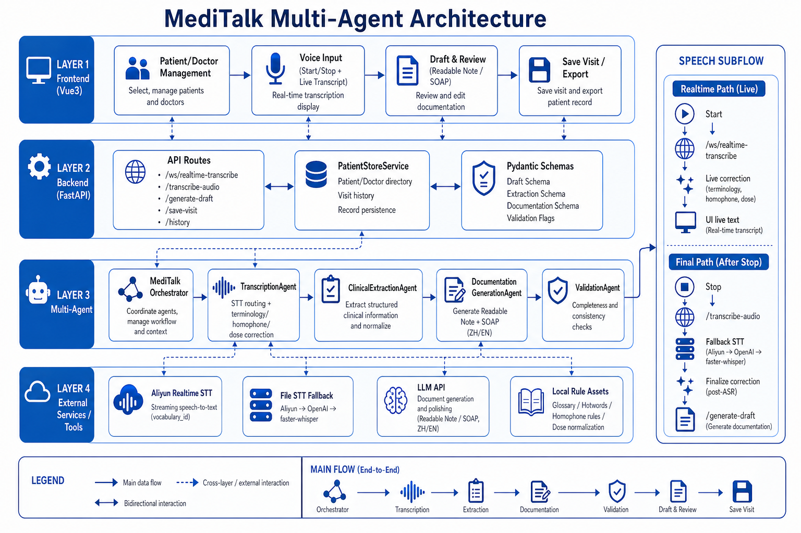

Knowledge-Grounded ASR Post-Correction
A key technical challenge in MediTalk was that general-purpose speech-to-text systems were not reliable enough for Chinese medicine documentation. The raw transcript could contain errors in herb names, acupoints, dosage expressions, and homophones. These errors were especially important because they could propagate into downstream clinical extraction, bilingual documentation, and SOAP-style note generation.
To improve reliability, I designed a knowledge-grounded ASR post-correction layer. Instead of treating the speech-to-text output as final, the system checks the raw transcript against a domain-specific medical terminology knowledge base. This knowledge base includes symptoms, Chinese herb names, acupoints, treatment terms, dosage normalization rules, hotwords, aliases, homophone rules, and common ASR error mappings.
The correction layer performs candidate term matching, context-aware disambiguation, terminology normalization, and lightweight validation. The output is not only a cleaner transcript, but also a set of terminology-grounded structured hints, such as possible complaint, examination, syndrome, prescription, treatment, and advice fields. These hints are then reused by the structured clinical extraction module to build a richer semantic representation of the visit.
The key design principle is that the LLM is not asked to freely rewrite the doctor’s speech. Instead, the correction process is guided by controlled domain knowledge and clinical context. This makes the downstream documentation workflow more stable, reviewable, and easier to validate.

Figure 2. Knowledge-grounded ASR post-correction layer for domain-specific clinical speech documentation.
Knowledge Sources Used for Correction
| Knowledge Source | Purpose in Post-Correction | Downstream Use |
|---|---|---|
| Symptoms and clinical phrases | Normalize common symptom descriptions and clinical expressions. | Supports complaint, history, and symptom extraction. |
| Chinese herb names | Correct rare or easily misrecognized herb names in the raw transcript. | Supports herbal medication and prescription fields. |
| Acupoints and treatment terms | Improve recognition of acupuncture points and treatment-related terminology. | Supports therapy and treatment detail extraction. |
| Dosage normalization rules | Standardize dosage expressions and reduce ambiguity in medication instructions. | Supports medication review and safer bilingual reporting. |
| Hotwords, aliases, and homophone rules | Handle domain-specific pronunciation variation, aliases, and Chinese homophone errors. | Improves terminology consistency before structured extraction. |
| Common ASR error mappings | Map frequently observed speech-to-text mistakes back to plausible clinical terms. | Provides terminology-grounded structured hints for the semantic extraction layer. |
This design reflects a research-to-practice principle: for domain-specific LLM systems, reliability often comes from combining model capability with external domain structure, controlled terminology, validation rules, fallback mechanisms, and human review.